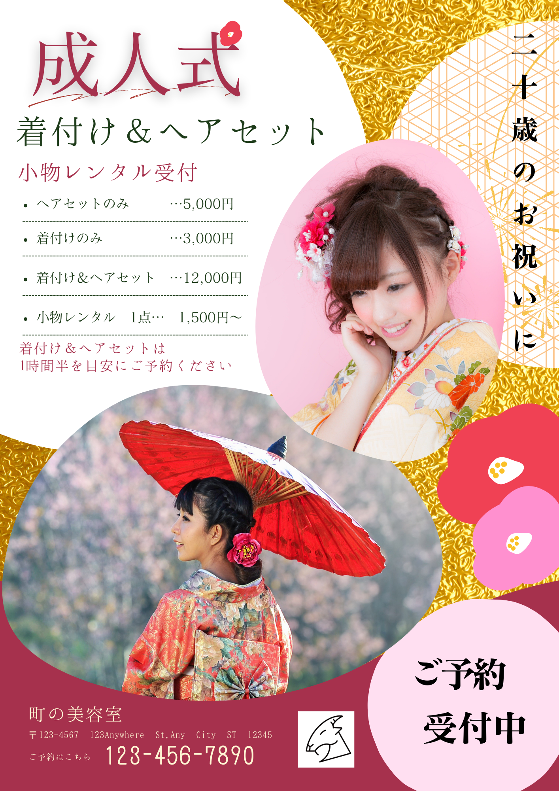
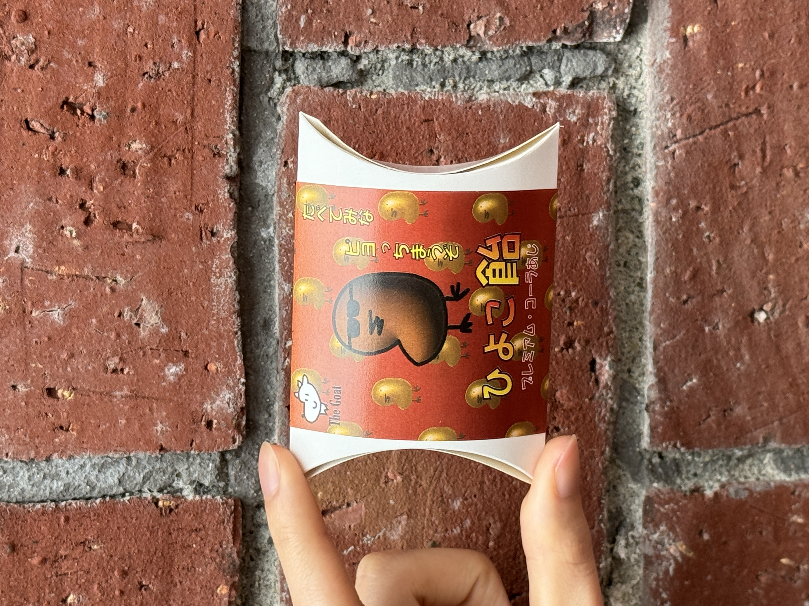
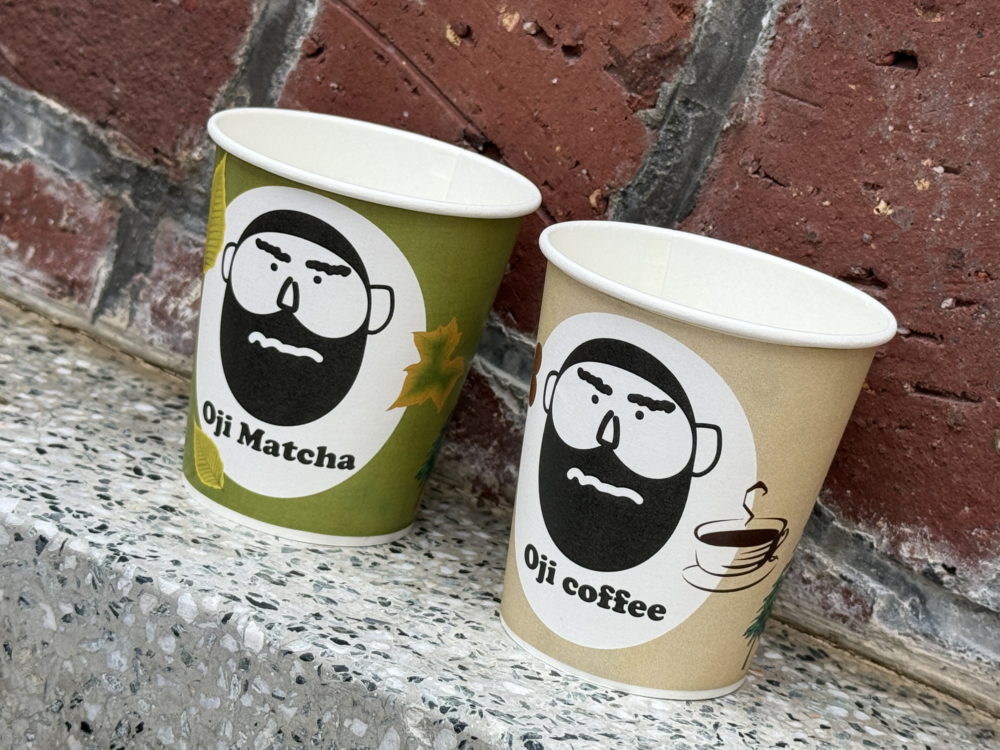

趣味で風景やポートレート写真を撮ります。
旅先で撮影した写真を洋服のデザインやポートフォリオなど、 様々なデザインに活用することも楽しみのひとつです。
元の写真 撮影場所:四王子神社/熊本県長洲町
編集後の写真
森のカフェをイメージして、名刺とパンフレットを作成しました制作ツール（Illustrator）
成人式の着付けのチラシを想定して作成しました制作ツール（Canva）

ピローボックス。ひよこの形の飴制作ツール（Illustrator）

紙コップのデザイン制作制作ツール（Illustrator）
